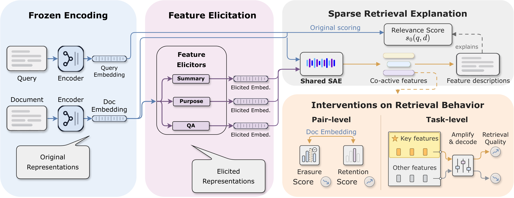
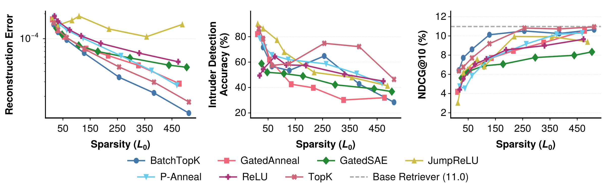
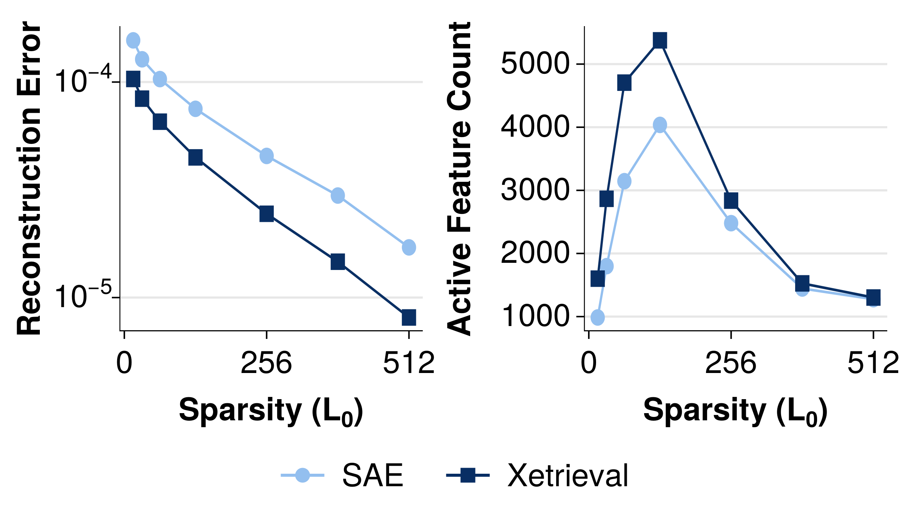
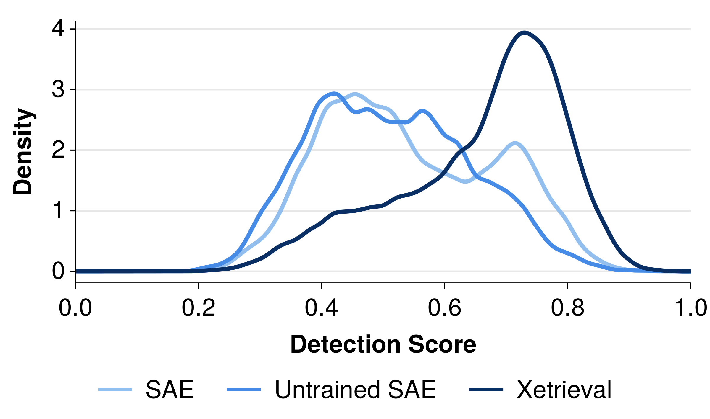
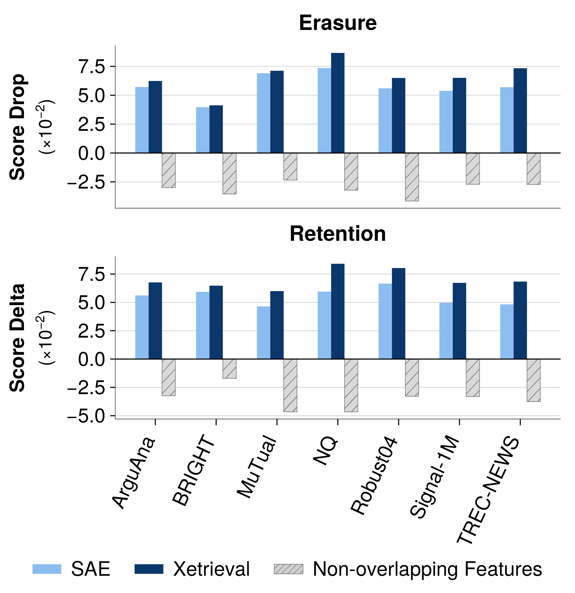
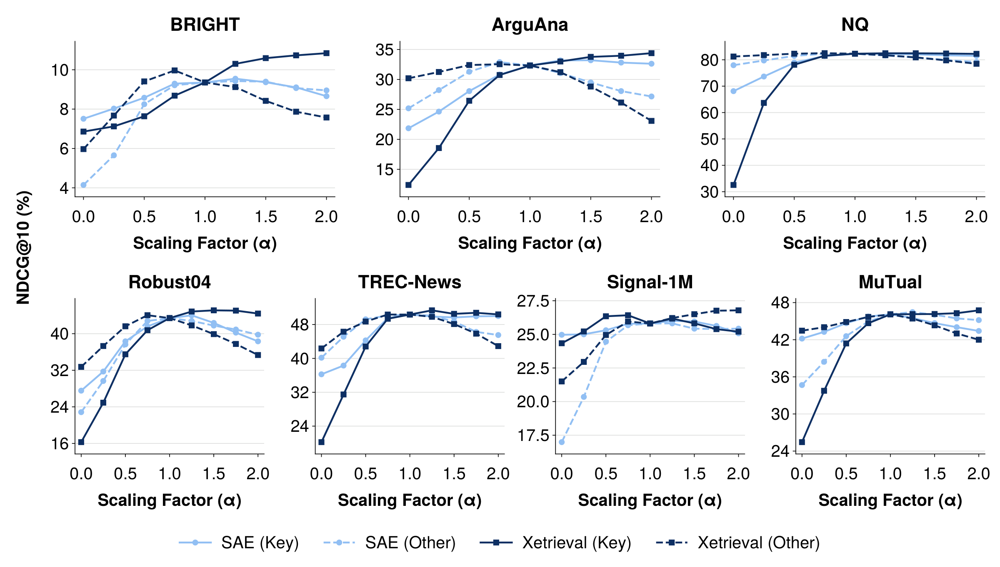
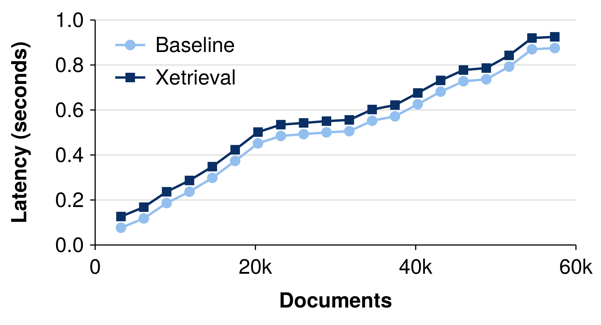

Feature elicitation
Auxiliary document views make retrieval-relevant aspects of document meaning more explicit for sparse decomposition.
Research Project
1 School of Computer Science and Engineering, Beihang University 2 State Key Laboratory of General Artificial Intelligence, BIGAI

Abstract
Dense retrieval enables effective semantic matching, yet the semantic factors underlying its relevance scores remain opaque. Sparse autoencoders (SAEs) support feature-level explanations by decomposing dense embeddings into sparse semantic features. However, the document semantics underlying a retriever's relevance scores may not be sufficiently explicit in the embeddings to be recovered as interpretable SAE features.
We introduce Xetrieval, a framework for explaining dense retrieval through feature elicitation. Feature Elicitors make retrieval-relevant aspects of document meaning more explicit through auxiliary views, facilitating their identification as interpretable SAE features. A shared sparse dictionary learns from these varied representations to express query–document relations through describable features. We assess their influence on relevance scores through interventions on the original document embeddings.
Experiments show that Xetrieval yields more interpretable features than an SAE baseline and identifies feature sets with a stronger influence on the retriever's scores. Task-level feature modulation further demonstrates more effective retrieval steering. These findings highlight the value of feature elicitation for relevance attribution and retrieval steering.
Auxiliary document views make retrieval-relevant aspects of document meaning more explicit for sparse decomposition.
A shared sparse dictionary learns from varied semantic expressions and supplies describable features for query–document relations.
Pair-level interventions assess influence on the original retrieval scores; task-level modulation evaluates retrieval steering.
Experiments
We first assess sparse feature quality and interpretability, then examine the selected features' influence on relevance scores and their utility for task-level steering. These analyses jointly assess the quality of retrieval explanations. We also measure the computational overhead of feature elicitation.
Sparse Dictionary Quality
We compare seven SAE variants using reconstruction error,
intruder detection accuracy, and retrieval with reconstructed
embeddings. TopK at k = 256 offers a favorable
balance across these criteria and is used in the subsequent
explanation experiments.

Structure of Sparse Representations
Xetrieval achieves lower reconstruction error and activates more distinct dictionary features than the SAE baseline. This broadens the set of candidate features available for retrieval explanation. Active Feature Count measures the number of distinct features activated at least once across the evaluated embedding set.

Interpretable Sparse Features
In the automated Detection evaluation, a language model uses each feature description to distinguish activating from non-activating texts. Xetrieval's scores shift higher relative to SAE and Untrained SAE, indicating closer agreement between its descriptions and the evaluated activation patterns.

Pair-Level Interventions
With matched feature counts and a fixed query embedding, erasing Xetrieval's selected decoder spans from the original document embedding causes larger average similarity decreases than SAE. Retaining these spans yields larger increases. These responses provide behavioral support for relevance attribution through the selected feature sets.

Task-Level Interventions
We select features associated with task relevance and scale their activations before decoding. On most datasets, suppressing Xetrieval's key features reduces retrieval performance, while amplifying them maintains or improves it. Relative to SAE, Xetrieval generally yields larger losses under suppression and greater gains under amplification.

Computational Efficiency
End-to-end timing on the BRIGHT Biology document set shows a small absolute latency overhead for Xetrieval. Each Feature Elicitor requires one MLP forward pass, and the shared SAE can encode the additional views in a batch. Both operations act on fixed-dimensional embeddings.

Code
The release contains the inference pipeline, shared TopK SAE
checkpoint, and Feature Elicitor checkpoints for
qa, summary, and purpose
document-side views.
git clone https://github.com/Hihiczx/Xetrieval.git xetrieval
cd xetrieval
pip install -r requirements.txt
python explain_retrieval.py \
--input_jsonl examples/query_doc_pairs.jsonl \
--output_jsonl outputs/explanations.jsonl \
--embedding_model_name intfloat/e5-large-v2 \
--feature_elicitor_dir checkpoints/feature_elicitors \
--sae_checkpoint checkpoints/sae_model.pt \
--device cuda \
--batch_size 64Citation
If you find Xetrieval useful for your research, please cite:
@article{cai2026xetrieval,
title={Xetrieval: Mechanistically Explaining Dense Retrieval},
author={Cai, Zhixin and Bai, Jun and Liu, Yang and Li, Jiaqi and Zhang, Yichi and Li, Taichuan and Chen, Zhuofan and Jia, Zixia and Zheng, Zilong and Rong, Wenge},
journal={arXiv preprint arXiv:2605.29507},
year={2026}
}